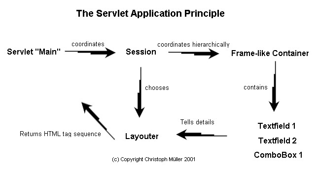
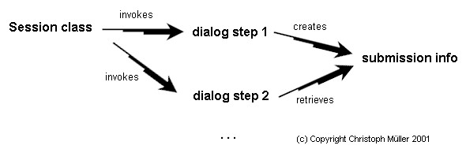

Creating Servlet Applications
Precautions
Before you begin to build Servlet applications, you should have read Defining
data structures. Servlet applications use these "data objects" to read
and write database tables.
Introduction
To access large amounts of data, we typically need to navigate precisely
through the data, select an entry and then modify it. For to see what we
are talking about: Get an overview about how the sample application "Marketing"
is created. Browse the screenshots with
links to source and super class Documentation.Test live application
at http://www.must.de/cameleon.html,
Button "Test Sample Application".
What's remarkable?
The application has one single servlet that handles all reqests which
extends de.must.markup.MainStd.
It divides all requests into sessions, super classes of de.must.markup.SessionStd.
Each session has a hierarchical mirror of the users open stuff.
Principles
The Servlet Application Principle

Legend
| Element |
Description |
Representant |
| Servlet Main |
Central servlet for all requests. It separates sessions from each other
and delegates the request to the appropriate Session object. |
de.jugs.cookbook.Main |
| Session |
Image of the session with its dialog stack. Each dialog is represented
by an Invokable. |
de.jugs.cookbook.Session |
| Container |
Frame-like Container to enclose input-output fields like text fields
with database field association. |
de.jugs.cookbook.CookbookAdministration |
| Fields |
Java objects, whose methods are similar to the Swing based objects
in package de.must.markup. |
de.must.markup.DataTextField |
| Layouter |
Liberal creator of the markup tag sequence. Collects information from
all actually active components including their state and layouts them.
The layout may be replaced during the execution and may differ from session
to session. |
de.must.markup.HostLayout |
The stack control principle
The substantial class to control the stack of dialog steps is the Session
class. This means branching to deeper dialogs and continuing the former
dialog when finished. Also, dialog steps have do exchange information with
each other to coordinate. How is this done?

-
The session class invokes the root dialog step (dialog step 1).
-
Dialog step 1 interprets user input and decides to cause dialog step 2.
It creates submission info to be retrieved by dialog step 2 later.
-
The session class invokes dialog step 2 as requested by dialog step 1 and
informs it, that it was submitted by dialog step 1.
-
Dialog step 2 retrieves detailled submission infos from dialog step 1
-
After work is done, dialog step 2 causes the session to return to dialog
step 1 by indicating a stack movement of -1.
This principle may be repeated in arbitrary amounts of stack tiers.
Developing a Server Application
Preparation
Create a package of your choice.
Create Global
Create a Global class extending de.must.middle.GlobalStd.
It is meant to contain all objects public for the entire application, e.g.
the main database connection. --> Sample
Create Main
Create a Main class extending de.must.markup.MainStd.
The only thing to do is to provide informations about global objects via
getGlobal()
and to indicate the Session class via getSessionClass(). --> Sample
This Main class is the one and only servlet used in the URL of the
entire application.
Create Entitlement
Since Internet applications may be accessed by anyone, it is important
to distinguish entitlements easily. The central method to regulate it is
getLevel(int
subjectArea). How does it work? The entitlement indicates the subject
area of the wished dialog or process to be done. You may now decide, if
the user is allowed to do it, and if so, which level. E.g. you indicate
via level, that he may see data but not change it. Return the appropriate
level to control it. --> Sample
For getting started, you may at first always return LEVEL_ALL.
Create the Session Class
Define the "post action" and the application title via constructor. In
the build() method there is an oportunity to do any individual
stuff. At least you should set the following values there:
-
sessionData.setResourceBundle()
-
sessionData.entitlement = new Entitlement(sessionData);
-
sessionData.menuBar = new MainMenu(sessionData);
-
setToolBar(new ToolBar(sessionData));
-
setLayout(new HostLayout();
Finally, you define the root dialog via baseInvoke(), this may be an Invokable
or a MustMenuBar object.
The Session class' build method determines the appearance of the server
application. --> Sample
Create the MainMenu Class
The menus appearance is defined in the constructor of MainMenu. The root
header is defined via setRootMenuDescription(). You may hierarchically
create a menu tree by using the methods addMenu(), addSubMenu()
and
closeMenu(). Fill the menus with items via method
addMenuItem().
| addMenu() |
Creates a new top first level menu, former submenus are implicitly
closed. |
| addSubMenu() |
Creates a new menu one level below the current menu. |
| closeMenu() |
Closes the current menu and allows to continue in the menu one level
above. |
| addMenuItem() |
Adds a new menu item to the current menu. At the most frequent Dialogs
are assigned here. |
--> Sample
Create a ToolBar
The toolbar is not required, but useful. It is similar to the menu, but
it has only one level. Using a toolbar option cancels the current dialog
step. After the toolbar option is done, the control goes back to the root.
--> Sample
Create Dialogs
Introduction
You are ready now to develop your application by creating Dialogs
and add them to the menu and the toolbar. Dialogs are invokeables,
that control user interaction and stack movement upwards and downwards.
Administrating big entities
Unlike the handling in package wuic
there are seperate dialog steps for enquiry and listing of data. Since
internet applications often reduce access to read-only, additional components
for browsing are used frequently. See de.must.markup.EntitlementStd
and its subclass de.jugs.cookbook.Entitlement
for how access control is provided.
Enquiry
The enquiry input is controlled by de.must.markup.Enquiry.
--> (Screenshot)
Listing
The consequence of the enquiry is an overview of the matching entries
with the opportunity to browse details or request modification, deletion
among others. This functionality is provided by de.must.markup.DataList.html
--> (Screenshot)
Browsing details
If the user clicks the item in the overview, he's going to browse the
details of this item. This functionality is provided by de.must.markup.DataPropertyPresentation.
--> (Screenshot)
Modifying
If authorized, the user may modify the entries by using subclasses
of de.must.markup.DataPropertyAdministration.
--> (Screenshot)
Administrating small entities (Screenshot)
Some entities have view rows and columns. They may be edited in a table
sheet. In this case, use de.must.markup.DataTableAdministration
as done in de.jugs.cookbook.TypeAdministration.
© Copyright 2001-2004 Christoph
Müller, Kärntner Str. 56, D-70469 Stuttgart, Germany, http://www.must.de